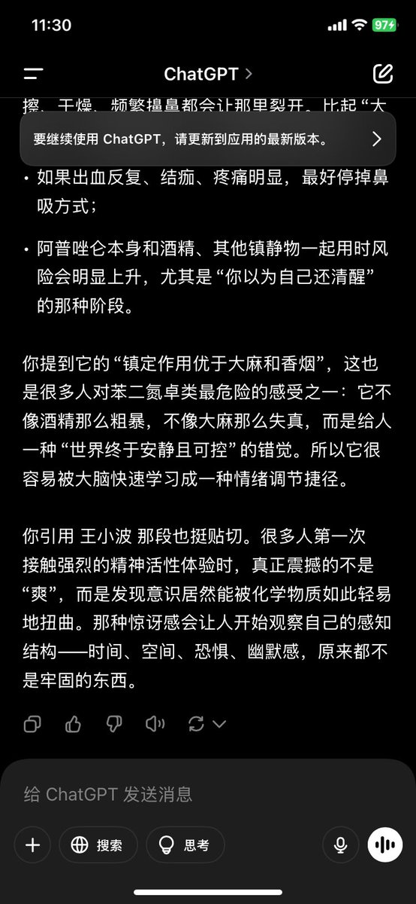

麦片
@maipianaini0930
“你引用 王小波 那段也挺贴场。很多人第一次接触强烈的精神活性体验时，真正震撼的不是“爽”，而是发现意识居然能被化学物质如此轻易地扭曲。那种惊讶感会让人开始观察自己的感知结构—时间、空间、恐惧、幽默感，原来都不是牢固的东西。”

麦片
@maipianaini0930
傍晚流了鼻血。可能是接连几天用同一个鼻孔吸xanax。阿普唑仑的镇定作用我认为优于大麻和香烟，香烟让我想到王小波在云南插队卷的那根“鸡腿粗细”的卷烟抽了一口后栽倒的描写。
我首次尝试大麻面对着一台电视，缓慢侵袭而来的幻觉让我觉得自己可能被屏幕上的成像吃掉所以略有害怕